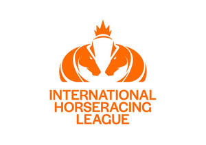
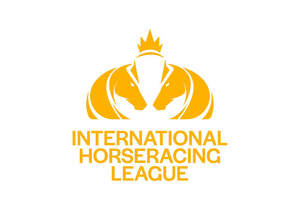

Trade Mark Journal No.2025/016 18 April 2025
UK00004183600 3 April 2025 (9,16,25,38,41)
Mark 1
Mark 2
Mark 3

Mark 4
Mark 5

Mark 6
- Class 9
- Computers; computer programs, computer software and hardware; pre-recorded and blank compact discs, CD ROMs, video cassettes, audio tapes, audiovisual tapes, laser discs, DVDs and other digital and analogue recording media; apparatus, instruments and media for recording, reproducing, carrying, storing, processing, manipulating, transmitting, broadcasting, retrieving and reproducing images, video, music, sounds, text, signals, software, information, data and code; downloadable digital video, audio and audiovisual recordings; apparatus for recording; computer games; computer game software; downloadable computer game programs; downloadable publications; downloadable ring tones for mobile phones; fixed and mobile telephones; screensavers; sunglasses; counting apparatus; data logging devices; calculators; scoreboard apparatus; scoring apparatus; radios; encoded and magnetic cards; advertising signboards; receivers; teaching and instructional apparatus and instruments; televisions; monitors for recording events; photographic apparatus; binoculars; clothing (excluding footwear), headgear, belts, goggles, gloves, all of a protective nature; mouth protectors (gum shields); helmets (protective- ); helmet cases of leather specifically adapted to contain helmets; software for creating and accessing virtual reality, augmented reality and virtual world experiences; virtual reality game software; virtual reality software for simulation; virtual reality software for telecommunications; downloadable virtual goods, namely, virtual horses; software for managing digital collectible services, marketplaces for transactions, and registries using blockchain-based software technology and smart contracts for digital collectibles; virtual goods, namely virtual horses and riders authenticated by authenticated by non-fungible tokens [NFTs] used with blockchain technology; computer programs featuring in game currency, and consumables in the nature of extra time and other play enhancing features in the nature of power boosts, power-ups, enhanced abilities, access to content, access to experiences, loyalty points and in game points and resources for use in acquiring in game upgrades and enhancements, all for use in online virtual worlds; downloadable digital files authenticated by non-fungible tokens; parts and fittings for the aforesaid goods.
- Class 16
- Printed matter; printed matter relating to the sport of horse racing; paper, card, cardboard and goods made thereof; publications; periodical publications relating to sporting activity; programmes; magazines; books; calendars; albums; comics; cartoons; diaries; stationery; greeting cards; posters; photographs; pictures; cards; collector cards; post cards; trading cards; stickers; instructional and teaching material (except apparatus); flags made of paper; printed advertising material; stickers; address books; organisers; maps, plans and charts; indexed books for the recordal of information relating to sports; printing, painting and drawing sets; stamps; writing instruments; writing pads; transfers; gift wrap; bags, wallets, cases, holders, packaging, badges, mats all of either paper, card or plastic; ornaments of paper, card or plastic; rulers; inks; erasers; plastic bags; wrapping material; rosettes of paper; betting forms; betting slips; hat boxes of cardboard; parts and fittings for all the aforesaid goods.
- Class 25
- Clothing; footwear; headgear; underwear; scarves; gloves; belts; braces; socks; wristbands; headbands; skull caps; visors; horse-riding boots; clothing for horse-riding [other than riding hats]; parts and fittings for all the aforesaid goods.
- Class 38
- Telecommunications; broadcast services; broadcasting of programmes via the internet; broadcasting programmes via a global computer network; information services relating to broadcasting; interactive communications services by means of computer; interactive telecommunication services; transmission of interactive entertainment software; transmission of audio, video and/or audio visual programming (by any means); transmission of sound and vision via satellite or interactive multimedia networks; transmission of text, messages, sound and/or pictures; cable television services; satellite television services; diffusion of television programmes; operation of a television subscription service (pay-TV) including video-on-demand; provision of television broadcasting equipment for outside locations; leasing of cable television equipment; television screen based text transmission services; provision of on-line forums; short message services (SMS); multimedia messaging services (MMS); provision of interactive polling services; news agency services; providing access to computer databases in the fields of social networking and social introduction; provision of access to news and sports information; broadcasting and transmission of interactive television, interactive games, interactive news, interactive sport, interactive entertainment and interactive competitions; streaming delivery of video on demand streams to viewers; web portal services; telecommunications information; data communication services; data broadcasting services; message sending; advising or providing information in relation to the foregoing; information relating to all the aforementioned services provided on-line from a computer database or via a helpline or the Internet.
- Class 41
- Arranging, organising and staging sports events and competitions; television, radio and film production; dubbing; video tape editing; betting services; gaming services; gambling services; electronic betting, gaming, gambling, lottery or bookmaking services provided by means of the Internet, or via a global computer network or via telephony including to mobile telephones, or via a television channel including a television channel distributed by satellite, terrestrial or cable television broadcast; prize draws; entertainment; entertainment services, namely facilitating interactive and multiplayer and single player game services for games played via computer or communication networks; arranging and conducting parties and other entertainment functions; entertainment services provided during intervals at sports events; providing digital video and audio content (not-downloadable) from the Internet; entertainment and educational services provided via all forms of electronic or radio transmission; game services; electronic games services; games offered on-line (on a computer network); provision of telephone ring tones (not downloadable); informational services, provided via all forms of electronic or radio transmission, relating to horse racing, horses, jockeys or horse racing events; publishing services; provision of information relating to sports; publication of information relating to sports events on the Internet; sports officiating; scoring and timing services for sports events; providing apparatus for sports; hospitality services (entertainment); providing venues, stadia and other facilities for sports events and competitions; conducting horse races; equipment rental for recreational horse riding; facilities for horse riding (provision of- ); horse jumping events (organising of -); horse riding instruction; horse showing; horseback riding camps; horses (betting on- ); organisation of horse riding meetings; provision of horse riding facilities; rental of horses for recreation; entertainment services, namely providing on-line, non-downloadable virtual horses for entertainment purposes; entertainment services, namely, providing online virtual and augmented reality environments; entertainment services, namely providing on-line, non-downloadable digital collectibles for entertainment purposes; consultancy, information and advisory services relating to all the aforesaid services.
Osool Properties for Investment Holding Company
Representative: Charles Russell Speechlys LLP